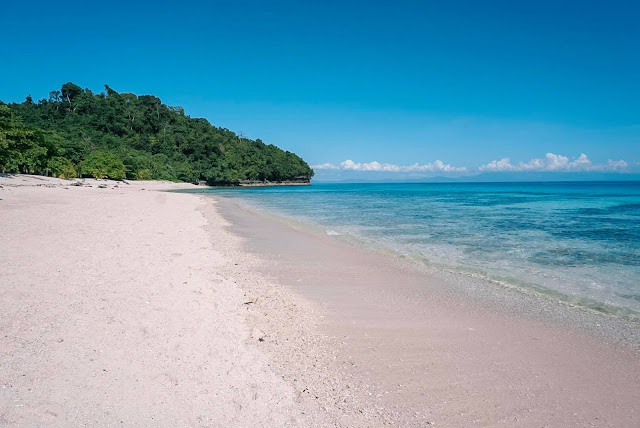
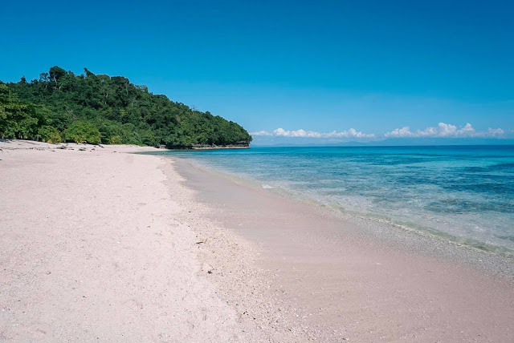

Top 5 Destination of every region in Mindanao
Charcoal Beach in Zamboanga Peninsula Region


Charcoal Beach-Charcoal Beach Banigan,liloy,zamboanga Del Norte is a beach in Liloy
See more in Charcoal Beach
Katibawasan Falls in Northern Mindanao Region


Katibawasan FallsKatibawasan Waterfall is located in Camiguin Mambajao, the waterfall is 75 meters long, the water slopes down, and the clear water flows straight down from the top.
Because there is no direct sunlight, it is said that the water is relatively cool, so you can play in the water.
There are various flowers and plants, ferns and pebbles growing around the pool, which can be used for a picnic. See more in Katibawasan Falls
Samalan Camp and Sea in Davao Region
 

Samalan Camp and Sea-Are you longing for a vacation adventure that is far from the conventional experience offered by commercialized resorts? Then Samal Camp Park will truly ignite your interest in visiting the place.
Nestled in a beautiful cove in Baranggay San Remigio of Kaputian District in the southern most portion of Samal Island, Samalan Camp & Sea which is formerly known and named as Samal Camp Park, takes pride of its 300 metre white-sand beach rich in colourful stones and corals and most of all well-safeguarded marine life and pristine crystal-clear azure waters. See more in Samalan Camp and Sea
Koronadal City in SOCCSKSARGEN Region


Koronadal City-The B'laan words koron, meaning cogon grass, and nadal, meaning plain, came together to form the name Koronadal. Marbel, a B'laan word meaning "waters murky," was the previous name of the area. When the City was inhabited by natives, these were the best names to describe the area.
Once, Koronadal's boundaries extended north to Polonoling, Tupi, south, and northeast to the Quezon mountain range and the municipality of T'boli, respectively. This area was once known as Koronadal.
The Koronadaleos' year begins with the Hinugyaw Festival, which commemorates the city's founding anniversary. Koronadal City, one of the busiest in South Cotabato, has drawn a large number of visitors from around the country and the world thanks to a diverse calendar of events. To honor the city's founding, a riot of color and music is being held throughout the city. With their brightly colored costumes, the street dancing competition enlivens the streets of the cities and delays traffic for a few hours.
The street dancing in Hinugyaw is unique in that it takes place in the late afternoon, just before sunset, to avoid the oppressive heat. Despite the fact that most of the participants are students, this initiative should be given the highest priority. Many people come out to watch the street dancing, which is one of the main attractions of the festival. Koronadal is the capital of South Cotabato, which is also known as the Land of the Dreamweavers because of its beautiful scenery. This is because this province is home to the majority of the T'Boli people.
So, if you're thinking of visiting Koronadal City soon, be prepared for a culturally rich and naturally breathtaking experience! Koronadal, like its neighbor Kidapawan City, is full of natural wonders like lakes, waterfalls, vast plantations, and many more! See more in Koronadal City
Naked Island in Caraga Region


Naked Island-If you want to see a naked beach, literally, you’ll find one in Siargao. Naked island, as the name suggests, is completely bare. This tourist spot in Mindanao has nothing but white sand and azure waters surrounding it, no distractions for the 360° view of the island.
How to get there:
From General Luna, you will just have to board a rented boat. It’s usually part of the three-island tour in Siargao where you’ll visit Naked Island, Guyam Island, and Daku Island. See more in Naked IslandTawi-Tawi in Bangsamoro Autonomous Region in Muslim Mindanao

Tawi-Tawi-The province lies at the southwestern tip of the country, situated between the Sulu Sea in the north and the Celebes Sea in the south.
It is home to fascinating coral reefs and diverse sea beings.
See more in Tawi-Tawi